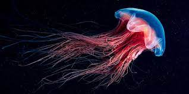

Las medusas son invertebrados que, junto con los corales, las gorgonias y las anémonas, pertenecen al grupo de los cnidarios (knidé = ortiga, proviene del griego). Este grupo animal presenta células urticantes que usan para capturar presas y también como defensa. Estas células contienen una cápsula en cuyo interior hay un filamento enrollado y un veneno. Cuando una presa contacta con la superficie de la medusa, la cápsula se abre y los filamentos se eyectan y se clavan en la presa donde inyectan el veneno.
Las medusas, también denominadas popularmente como aguamalas o aguasvivas, son animales pelágicos (de mar abierto) y aunque pueden propulsarse gracias a movimientos rítmicos de su umbrela, se mueven básicamente arrastrados por las corrientes marinas.
Porque su cuerpo está formado por un 95% de agua, hecho que les proporciona un camuflaje perfecto. El cuerpo de la medusa consta de tres partes principales: la umbrela, los brazos orales (que rodean la boca) y los tentáculos urticantes. Son animales de simetría radial. Presentan una cavidad interna, donde se realiza la digestión, denominada cavidad gastrovascular y que tiene una sola abertura que realiza las funciones de boca y ano.
Explicació más extensa
de lo que es una medusa:
Rasgos físicos de las medusas
Una medusa se desplaza temblando como si fuera un pedazo de gelatina, y hay algunas que parecen pequeñas masas transparentes sin una forma específica. Pero hay otras que son de mayor tamaño y de gran colorido, con un montón de tentáculos que cuelgan hacia abajo, como si fueran una especie de pulpo.
Tipos de medusas
Las medusas se adscriben al grupo zoológico de los Cnidarios, animales en su inmensa mayoría marinos que se distribuyen cuatro clases:
Medidas de protección contra la medusa
Puede resultar peligroso para los humanos nadar demasiado cerca de una medusa.
Se han establecido una serie de recomendaciones sobre las acciones preventivas en playas afectadas, dirigidas a los profesionales sanitarios, los pescadores y los bañistas, y proporcionadas por los investigadores del Centro Mediterráneo de Investigaciones Marinas y Ambientales (CMIMA-CSIC), Josep-María Gili y Francesc Pages.
Si hay un gran número de medusas en aguas costeras, se debería cerrar la playa al menos durante 24 horas, tomando precauciones incluso si las medusas proliferan lejos de la línea de costa.
Si las medusas están cerca de la playa, lo mejor es permanecer fuera del agua y lejos de la zona de rompiente.
Si dentro del agua se ve una medusa, es mejor no confiarse aunque esté lejos, ya que con la acción de las olas sus tentáculos se pueden romper y las células de los fragmentos flotantes pueden seguir activas. Además, es preciso avisar a los bañistas no familiarizados con estos organismos para que no los toquen incluso si éstos parecen muertos.
No se deben tocar las medusas que se hallen en la arena, aunque parezcan muertas, las células urticantes también se mantienen activas durante un período de tiempo; incluso pasear por la orilla puede ser peligroso, ya que pueden quedar restos de tentáculos en la arena. Es necesario un periodo de un día de sol para desactivar las células urticantes localizadas en los fragmentos.
No se debe frotar la zona afectada ni con arena, ni con la toalla. No se debe aplicar nunca agua dulce para lavar la zona afectada, ya que el cambio de salinidad puede hacer que las células urticantes adheridas a la piel se rompan y liberen el líquido urticante. Conviene aplicar frío en la zona de la picadura poniendo hielo durante 15 minutos, pero siempre en una bolsa de plástico, no directamente en la piel, a no ser que sea de agua marina.
Si el dolor perdura, aplicar de nuevo la bolsa de hielo durante 15 minutos. Los tentáculos adheridos a la misma se pueden retirar con la ayuda de unas pinzas, pero nunca con los dedos.
Si el estado de la víctima empeora progresivamente después de aplicar hielo y ante cualquier complicación, como dificultades respiratorias, convulsiones o alteraciones del ritmo cardíaco, será necesario acudir al centro sanitario más próximo para aplicar las medidas adecuadas. Hay que tener en cuenta que las personas que han sido picadas una vez, están sensibilizadas y una segunda picadura puede producir una reacción más severa.
Pagina Diseñada por:
Luis Daniel Rodríguez Reséndiz
Página terminada en la fecha de: 9/VI/22
Todos los derechos reservados
Cualquier uso indebido de la información contenida en esta página queda a responsabilidad del individuo

{kind=link}